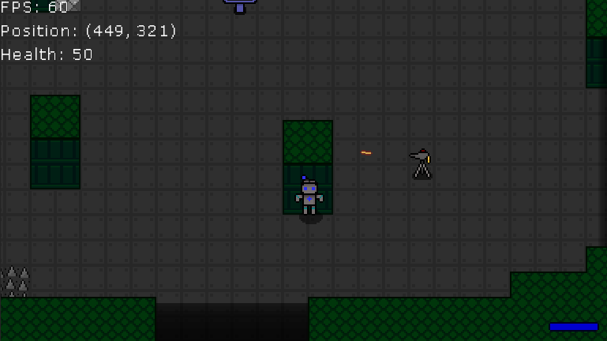
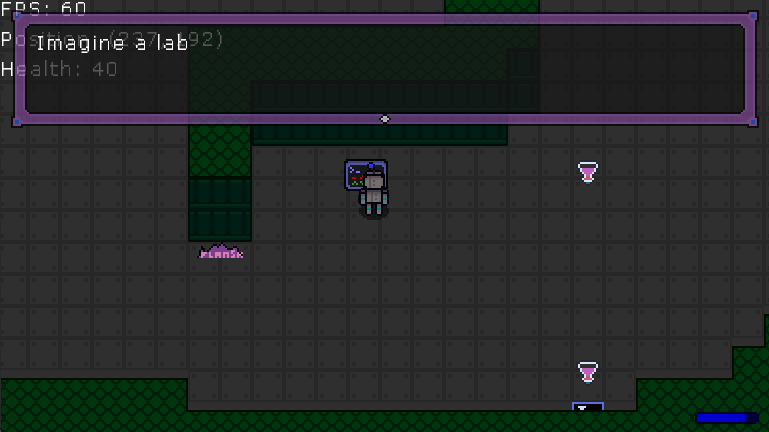

Vanadius (Godot Remake)
Estimated Project Date: Mid-Late 2020
An attempt at recreating Vanadius in the Godot Engine. Was pretty much abandoned after I realized I would rather be using my time to work on new and exciting projects.
There's not much here, so there's really not much to say. There are plenty of new mechanics that weren't in Vanadius though, such as sticking to walls, turrets, and throwing things. If this was finished, it would probably be more of a reimagining than a remake.
As it stands, I have no plans to revisit this.
Downloads
The playable build of this prototype is hosted directly on this site, and includes the source code! It's a Godot 3 project, so be sure to open the source code in the latest version of Godot 3 (3.6 at time of writing) and not Godot 4.
[Download] Windows/Linux x86 + Source Code (.7z, 19.7MB)

